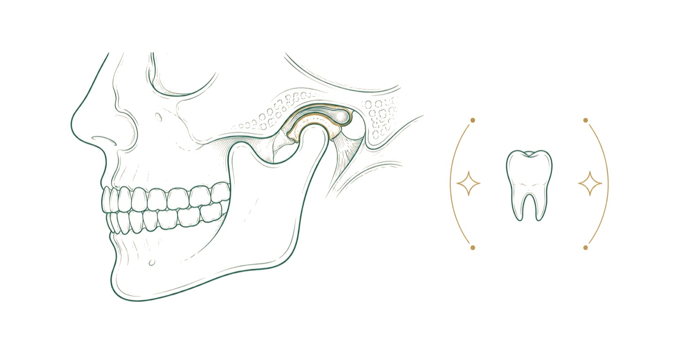

Pek çok aile çocuğunu diş hekimine ilk kez bir diş ağrıdığında ya da bir çürük gözle görülür hale geldiğinde götürür. Oysa ilk ziyaret, sorun çıkmadan, çocuğun diş hekimiyle rahat bir ortamda tanıştığı bir randevu olduğunda çok daha kolay geçer. Bu rehberde ilk muayenenin zamanını, o gün neler olduğunu, çocuğun nasıl hazırlanabileceğini ve evde süt dişlerinin nasıl korunacağını anlatıyoruz.
İlk muayene ne zaman?
İlk diş muayenesi için bir şikâyetin ortaya çıkmasını beklemek gerekmez. Uygun zamanı hekiminizle konuşabilirsiniz. Erken bir ziyaret ailelere gereksiz gelebilir; ancak bu ziyaretin amacı tedavi değil, ağız sağlığının erken dönemde değerlendirilmesi ve ailenin yönlendirilmesidir.
Erken ziyaret iki açıdan yarar sağlar. Birincisi, erken çocukluk çürüğü gibi hızla ilerleyebilen sorunlar başlangıç aşamasında fark edilir. İkincisi, çocuk diş hekimi ortamını ağrı yaşamadan tanır; bu da ileriki ziyaretlerin daha rahat geçmesine yardımcı olur.
Süt dişleri neden bu kadar önemli?
"Nasılsa değişecek" düşüncesi, süt dişlerinin ihmal edilmesinin en sık nedenidir. Oysa süt dişleri çocuğun çiğnemesi, konuşmayı öğrenmesi ve yüz gelişimi için gereklidir. Ayrıca altlarından gelecek kalıcı dişlere yer tutarlar.
Çürük bir süt dişi ağrıya, iltihaba ve çocuğun beslenmesinin bozulmasına yol açabilir. Süt dişi erken kaybedilirse yanındaki dişler boşluğa kayabilir ve kalıcı dişlerin dizilimi bozulabilir. Bu yüzden süt dişlerindeki çürükler de tedavi edilir.
İlk ziyarette neler olur?
İlk ziyaret kısa ve sakin tutulur. Küçük çocuklarda muayene çoğu zaman ebeveynin kucağında yapılır. Hekim dişleri, diş etlerini, ısırmayı ve ağız içi dokuları inceler; çürük başlangıcı, plak birikimi ya da gelişimsel bir farklılık olup olmadığına bakar.
Ailenin soruları da bu ziyaretin önemli bir parçasıdır. Biberon ve emzik kullanımı, beslenme alışkanlıkları, diş fırçalama yöntemi ve florlu macun miktarı konuşulur. Gerekirse röntgen istenir ve bulgular aileye açıkça anlatılır. Muayene sırasında ebeveynin çocuğun yanında kalıp kalmayacağına, çocuğun durumuna göre hekim karar verir.
Çocuğu ilk ziyarete nasıl hazırlarsınız?
Randevuyu çocuğun dinlenmiş ve tok olduğu bir saate almak işi kolaylaştırır. Ziyaretten önce diş hekimini kısa ve olumlu cümlelerle anlatmak yeterlidir: "Dişlerini sayacak, ne kadar güçlü olduklarına bakacak" gibi.
"Acımayacak", "korkma", "iğne yok" gibi sözler iyi niyetle söylense de çocuğun aklına korkulacak bir şey olduğu düşüncesini sokabilir. Ailenin kendi kötü diş hekimi deneyimlerini çocuğun yanında anlatmaması da önemlidir. Diş hekimi oyunu oynamak, dişlerini aynada birlikte saymak ve konuyla ilgili çocuk kitapları okumak alışmayı kolaylaştırır.
Korku ve kaygı ile başa çıkmak
Bazı çocuklar ilk ziyarette ağlayabilir ya da ağzını açmak istemeyebilir; bu olağandır ve bir başarısızlık sayılmaz. İlk ziyaretin amacı tanışmaktır; çocuk hazır değilse muayene zorlanmaz, bir sonraki randevuda kaldığı yerden devam edilir.
Hekim, kullanacağı aletleri çocuğa önce gösterir ve anlatır, sonra uygular. Bu "anlat, göster, uygula" yaklaşımı çocukların kontrolü elinde hissetmesini sağlar. Düzenli ve sorunsuz geçen kontrol ziyaretleri, ileride tedavi gerektiğinde çocuğun işbirliğini artırır.
Koruyucu uygulamalar
Çocuk diş hekimliğinde amaç, tedaviye gerek kalmadan dişleri korumaktır. Flor uygulaması, diş minesini güçlendirmeye ve başlangıç halindeki çürüklerin ilerlemesini yavaşlatmaya yardım eder. Fissür örtücüler, azı dişlerinin çiğneme yüzündeki derin oluklara uygulanan ince koruyucu tabakalardır ve bu bölgelerde çürük riskini azaltır.
Hangi uygulamanın ne zaman yapılacağı çocuğun yaşına, dişlerin sürme durumuna ve çürük riskine göre belirlenir. Kontrol aralığı da çocuğa göre değişir; çürük riski yüksek çocuklar daha sık görülür.
Evde ağız bakımı yaşa göre
Ağız bakımı ilk dişle başlar. Bebeklikte dişler yumuşak bir bebek fırçası ya da temiz bir gazlı bezle silinir. Florlu diş macunu üç yaşından küçük çocuklarda pirinç tanesi, üç yaş ve üzerinde bezelye tanesi kadar kullanılır. Çocuk macunu yutmamayı ve tükürmeyi öğrenene kadar bu miktarlara dikkat edilir.
Çocuk kendi başına iyi fırçalayana kadar bir yetişkinin fırçalamaya yardım etmesi önerilir; bu genellikle okul çağına kadar sürer. Gece biberonla süt, meyve suyu ya da şekerli içecek vermek, uyku sırasında dişlerin uzun süre şekerle temas etmesine yol açtığı için çürük riskini belirgin biçimde artırır. Şekerli atıştırmalıkları öğün aralarına yaymak yerine öğünlerle sınırlamak da dişleri korur. Su, öğün aralarında en iyi içecektir. Okul çağına gelen çocuklarda, fırçalamanın gün içinde nasıl yapıldığını birlikte gözden geçirmek ve düzenli kontrolleri okul tatillerine denk getirmek alışkanlığı sürdürmeyi kolaylaştırır.
Diş çıkarma dönemi
İlk süt dişleri genellikle altıncı ay civarında çıkmaya başlar, ancak bu zamanlama çocuktan çocuğa birkaç ay değişebilir. Diş çıkarma döneminde salya artışı, huzursuzluk ve bir şeyleri ısırma isteği sık görülür. Temiz ve soğutulmuş diş kaşıyıcılar rahatlatabilir.
Yüksek ateş, uzun süren ishal ya da belirgin halsizlik diş çıkarmaya bağlanmamalı; bu durumlarda çocuk hekimine başvurulmalıdır. Diş çıkarma için önerilen ilaçlı jelleri hekime danışmadan kullanmamak gerekir.
Emzik ve parmak emme
Emzik ve parmak emme, bebeklik döneminde olağan davranışlardır. Ancak bu alışkanlıklar ileri yaşlara kadar sürerse ön dişlerin öne itilmesine ve üst ile alt dişlerin kapanışının bozulmasına yol açabilir. Alışkanlığın ne zaman ve nasıl bırakılacağı için hekime danışın; bırakma süreci nazikçe ve çocuğu suçlamadan yürütülmelidir.
Ağızdan nefes alma, horlama ya da dilin konuşurken dişler arasına girmesi gibi durumlar da muayenede konuşulur; bazıları ileride ortodontik değerlendirme gerektirebilir.
Sık sorulan sorular
Çocuğumun dişinde hiç sorun yok, yine de götürmeli miyim?
Evet. İlk ziyaretin amacı sorun aramak değil, ağız sağlığını erken değerlendirmek ve aileye bakım konusunda yol göstermektir.
Süt dişindeki çürük tedavi edilir mi, nasılsa değişmeyecek mi?
Edilir. Çürük süt dişi ağrı ve iltihaba yol açabilir ve kalıcı dişlerin dizilimini etkileyebilir.
Çocuğum çok korkuyor, ne yapmalıyım?
Korkuyu artıracak sözlerden kaçının ve ilk ziyareti tanışma olarak görün. Muayene zorlanmaz; çocuk alıştıkça işbirliği artar.
Ne sıklıkla kontrole gelmeliyiz?
Kontrol aralığı çocuğun çürük riskine göre belirlenir. Hekiminiz ilk muayeneden sonra size uygun aralığı söyler.
Hafta sonu randevu alabilir miyiz?
Kliniğimiz Cumartesi günü de 09:00 - 22:00 arasında açıktır; okul saatleri dışında randevu planlanabilir.
Çocuğumun dişleri arasında boşluk var, sorun mu?
Süt dişleri arasındaki boşluklar çoğu zaman olağandır ve kalıcı dişler için yer sağlar. Değerlendirmeyi muayenede hekim yapar.
Çocuğumun dişleri sarı ya da lekeli görünüyor, ne yapmalıyım?
Lekeler bazen yüzeydeki birikintilerden, bazen başlangıç halindeki çürükten, bazen de diş gelişiminden kaynaklanır. Nedenini muayenede hekim belirler; evde beyazlatıcı ürün kullanılmamalıdır.
Süt dişi düşmeden kalıcı diş arkasından çıktı, sorun mu?
Özellikle alt ön dişlerde sık görülür ve çoğu zaman süt dişi kendiliğinden düşer. Süt dişi uzun süre düşmüyorsa hekime gösterilmelidir.
Çocuğumun dişlerini fırçalamasına nasıl yardımcı olabilirim?
Fırçalamayı bir oyun ya da aile alışkanlığı haline getirmek işi kolaylaştırır. Çocuk kendi başına doğru fırçalamayı öğrenene kadar ebeveynin fırçalamayı tamamlaması ya da kontrol etmesi önerilir; doğru yöntemi muayenede hekiminiz gösterebilir.
Kaynakça
- American Academy of Pediatric Dentistry (Amerikan Çocuk Diş Hekimliği Akademisi). Aileler için bilgilendirme kaynakları. aapd.org
- American Dental Association (Amerikan Diş Hekimleri Birliği). Bebek ve çocuk ağız sağlığı, MouthHealthy. mouthhealthy.org
- Türk Diş Hekimleri Birliği (TDB). Ağız ve diş sağlığı hasta bilgilendirme kaynakları. tdb.org.tr
Bu konu hakkında soru sormak ister misiniz? Diş hekimlerimize dilediğiniz saatte yazabilirsiniz.
Bize yazın